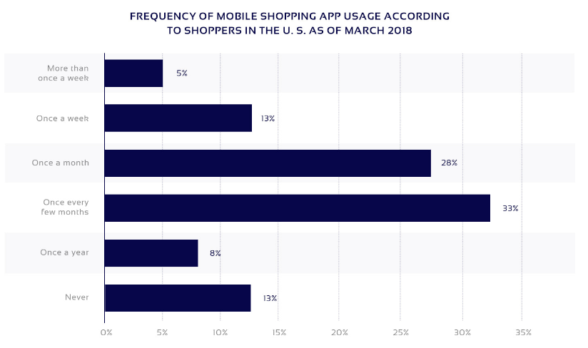

Perfil de usuário
Introdução
Para podermos fazer a análise do usuário, é interessante fazer uma análise de diversos outros dados e fatores que nos permitem abordar e categorizar os usuários da plataforma. Com isso em mente, o grupo fez uma pesquisa a fim de obter dados como "o que mais se compra no Wish", "quais países mais usam a plataforma", dentre outros aspectos.
Sobre o Wish
1 - Atualmente, 500 milhões de usuários estão ativos no aplicativo Wish.
2 - Existem mais de 1 milhão de comerciantes Wish.
3 - O aplicativo Wish marketplace registrou uma receita de US $ 1,9 bilhão em 2018, enquanto foi de apenas US $ 1 bilhão em 2017.
4 - A avaliação relatada do Wish é de US $ 8,7 bilhões.
5 - O Wish gasta US $ 100 milhões anualmente em anúncios no Facebook.
6 - O financiamento relatado do Wish é de US $ 1,25 bilhão.
Foco no Mobile
Uma pesquisa do PEW Research Center via Coresight Research mostrou que 21% dos compradores de baixa renda acessam a Internet apenas em seus smartphones, o que é superior à média de 12%. A atenção à experiência de compra móvel levou ao uso em larga escala do Wish nos Estados Unidos e em todo o mundo, e seus rankings ainda refletem esse fato. [1]


As versões Android e Ios do Wish permanecem regularmente em primeiro lugar em todos os aplicativos de compras, superando a Amazon, o eBay, etc. Isso se deve em grande parte à maneira como o Wish posicionou seu aplicativo, concentrando-se na experiência de navegação em oposição à experiência de compra. Os usuários do aplicativo podem abrir o aplicativo Wish, gastar cinco minutos procurando ofertas que possam interessá-lo e continuar o dia. Parece mais um site de ofertas diárias de criação de hábitos, como o Groupon ou o Woot (de propriedade da Amazon), do que uma loja de comércio eletrônico tradicional. Isso é bem diferente da experiência do aplicativo Amazon, onde a pesquisa de itens específicos é enfatizada. [1]


Tais fatos se confirmam ainda mais ao vermos as imagens acima, que demonstram o crescimento da utilização de celulares para navegação e compras onlines, e o vertiginoso crescimento da Wish.
Diversidade de produtos e alcance global
O Wish já possui mais de 20 milhões de clientes residentes no Reino Unido e oferece acesso fácil a um total de mais de 100 milhões de clientes em toda a Europa e a um total de mais de 200 milhões de clientes em mais de 70 países diferentes do mundo.

Metade dos nossos clientes tem menos de 30 anos, o que representa uma demografia muito diferente de outros mercados. Há também um forte viés feminino - no entanto, isso está se alterando rapidamente de acordo com as taxas de adoção de smartphones. [2]
Os consumidores são realmente diversos e compram em uma ampla variedade de categorias. Nos EUA, por exemplo, os vendedores mais bem-sucedidos geram milhões em receita anual de categorias que incluem utensílios domésticos, tecnologia recondicionada e equipamentos externos.

Principais Oportunidades
Cuidados pessoais, Brinquedos e jogos, Casa e jardim, Eletricidade de valor, Adulto, Fragrâncias dentre outros
Produtos não muito interessantes
Marcas de luxo, produtos altamente específicos (por exemplo, peças de automóveis BMV), serviços digitais.
Perfil de usuário
A partir de todos os dados acima, podemos traçar um perfil do usuário do site Wish:
| Item | Descrição |
|---|---|
| Idade: | Com idade média máxima de 30 anos. |
| Sexo: | Maioria feminina, mas os dados indicam que está havendo um balanceamento aqui |
| Experiência com tecnologia: | Visto que a grande maioria dos acessos é feita via celular, há uma experiência pelo menos média. |
| Produtos que procura: | Principalmente produtos de beleza, mas há diversos segmentos de produtos sendo procurados dentro do Wish |
| Meio que acessa o site: | Principalmente por meio do celular |
| Origem do usuário: | Em maioria européia, mas há usuários diversos países do globo. |
| Gasto médio: | Os usuários do Wish costumam procurar produtos de valores baixos, então o gasto médio dentro da aplicação costuma ser baixo. |
Referências
[1] https://jilt.com/blog/wish-growth/
[2] https://tamebay.com/2017/09/meet-marketplace-wish.html
[3] https://blog.bigziel.com/build-marketplace-app-like-wish/
[4] https://light-it.net/blog/how-to-make-an-app-like-wish-or-even-better/